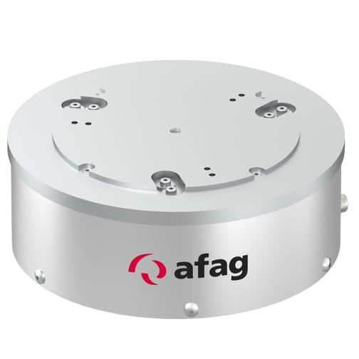
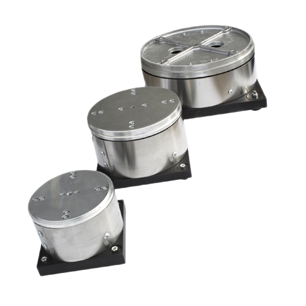
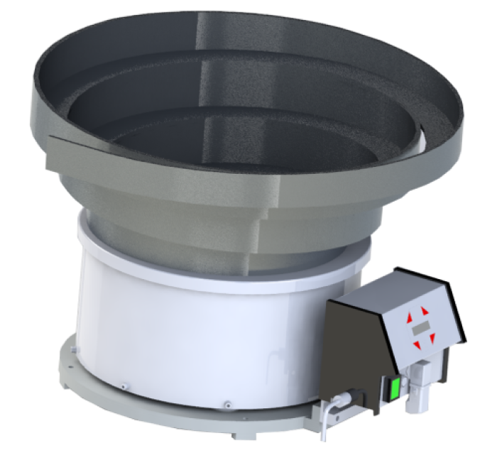
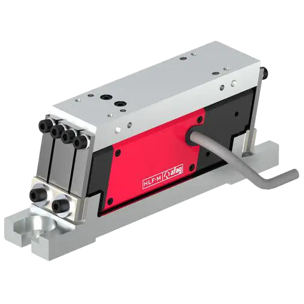
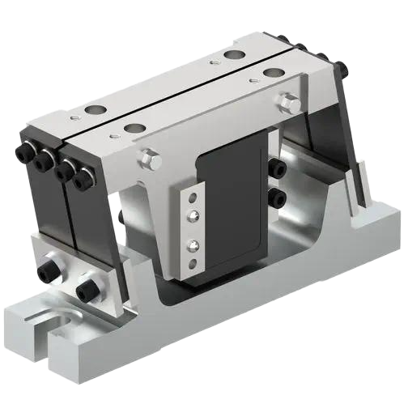
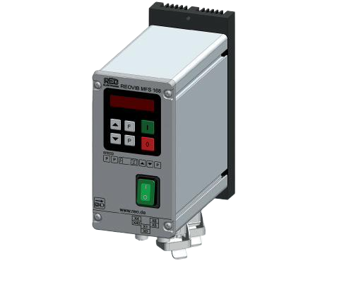
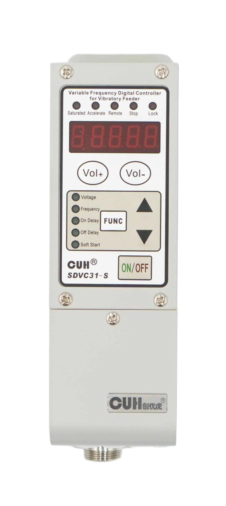

Rezgőtányérok
Rezgőtányér meghajtások különböző gyártóktól

BF Sorozat (AFAG)
BF20, BF25, BF30, BF35, BF40, BF50
- Körkörös szállítás tálcában
- Szubkritikus hangolás
- 100 Hz vagy 120 Hz
- Spirális pálya

WFL Sorozat (VIBROTEC AG)
WFL 150, WFL 200, WFL 300, WFL 450
- WFL 150: Ø 440 mm, 30-40 kg, légrés 0.4 mm
- WFL 200: Ø 470-500 mm, légrés 0.5 mm
- WFL 300: Ø ~600 mm, légrés 0.6 mm
- WFL 450: Ø ~800 mm, légrés 1.2 mm
- 230V / 50Hz, rugó-tömeg rendszer

RNA SRC-N Sorozat
SRC-N 160, 250, 400, 630, 800
- SRC-N 400-2: Ø 440 mm, 103 kg, 100 Hz, légrés 1.0-1.2 mm
- SRC-N 630-1: Ø 660 mm, 168 kg, 50 Hz, légrés 2.3-2.8 mm
- SRC-N 800-1: Ø 805 mm, 270 kg, 50 Hz, légrés 2.0-3.0 mm
- 220V / 50Hz, IP 54 védelem
- Max. rezgő tömeg: 35-80 kg (típusfüggő)
RNA SRHL Sorozat
SRHL 400-1
- SRHL 400-1: Ø 470 mm, 140 kg
- 50 Hz rezgési frekvencia
- 220V / 50Hz, 1140 VA teljesítmény
- 2 mágnes (YZUW 090), 6 rugócsomag
- Légrés: 2.0-2.8 mm, max. rezgő tömeg: 45 kg
Lineáris Rezgő Sínek
Egyenes vonalú szállítás, precíz alkatrész pozicionálás

HLF-M Sorozat
HLF07-M, HLF12-M, HLF25-M, HLF50-M
- Superkritikus hangolás
- Két egymás fölötti rezgő rész
- Gerjesztés fölött a sajátfrekvencián
- Példa: 100 Hz gerjesztés, ~97 Hz sajátfrekvencia

KLF Sorozat
KLF5, KLF7, KLF15, KLF25
- Szubkritikus hangolás
- Rugalmas konfiguráció
- Gerjesztés alatt a sajátfrekvencián
- Példa: 100 Hz gerjesztés, ~104 Hz sajátfrekvencia
Alapismeretek
Rezgéstechnika alapjai és rendszer felépítés
⚡ Rezonancia és Rezgésfelépítés
- Rugó-tömeg rendszer: Tömeg + Levélrugó + Elektromágnes
- Energia láncol: Elektromos → Mágneses → Mechanikus
- Rezonancia: Gerjesztés a sajátfrekvencia közelében
- Hatás: Kis energia → Nagy amplitúdó
🥣 Rezgőtálak Felépítése
- Működés: Hasznos tömeg ⇄ Ellensúly
- Szállítás: Körkörös, spirális pálya
- Hangolás: Szubkritikus (5% fölött)
- Frekvencia: 100 Hz vagy 120 Hz
➡️ Lineáris Sínek Felépítése
- Működés: Egyenes vonalú szállítás
- Rétegződés: Felső (sín) + Alsó (ellensúly)
- Arány: Magasság/Szélesség = 2:1
- Anyag: Szerszámacél (kopásálló)
🔧 Levélrugós vs Spirálrugós Rezgetés
- Levélrugó: Rétegelt fémlapok, hajlékony
- Előny: Kompakt, precíz rezgés, csendes
- Spirálrugó: Csavart huzal, nagy terhelés
- Előny: Nagy teljesítmény, robusztus
⚙️ Komponensek Leírása
- Levélrugók: Rezgés lehetővé tétele
- Elektromágnes: Gerjesztés (100-120 Hz)
- Légrés: 0.6-1.5 mm (kritikus!)
- Állítólapok: Sajátfrekvencia hangolás
Rezgő Vezérlők
Elektronikus vezérlők rezgőadagolók és lineáris adagolók számára
IRG1-S (Saventic)
Analóg trimmer-alapú vezérlő
- Fázisszög-szabályozás
- Trimmer potenciométerekkel
- 50/100/60/120 Hz frekvencia
- Lágyindítás 0-4 sec

REOVIB MFS 168 (REO Elektronik)
Menüvezérlésű frekvenciavezérlő
- LED kijelző és érintőpanel
- Numerikus kódok (000, F, I, E)
- 30-140 Hz frekvencia
- Automata frekvenciavezérlés
FS-26 (Fimotec-Fischer)
Többszintű hozzáférésű vezérlő
- Ebene 0, 1, 2, 3 menüszintek
- Kód A és B hozzáférés
- 5-200 Hz frekvencia
- Paraméter biztosítás

SDVC31 (CUH)
Digitális frekvenciamodulációs vezérlő
- SDVC31-S és SDVC31-M modellek
- 40-400 Hz frekvencia
- Gyorsítási index (100-150)
- Hullámforma szabályozás